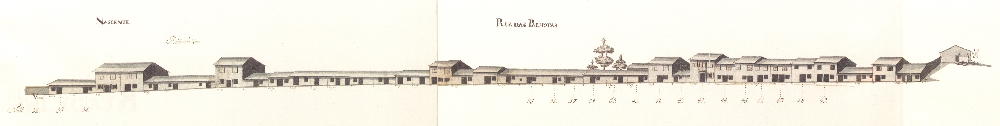

Rua das Palhotas - vista nascente.

Rua das Palhotas - vista poente.
Comprida artéria que saindo da rua dos Chãos de Sima se dirigia para o Alto Minho e que, a partir do ponto onde actualmente bifurca, tinha o nome de rua Nova do Bico .
Desconhece-se a data da sua abertura. Há quem ponha a hipótese de que partia daqui a Geira , via militar romana que atravessando o Gerês se dirigia a Astorga . Mas, se não serviu de estrada romana, teve ocupação medieval; antes de haver a estrada actual (aberta ao trânsito, por troços, a partir de 1860 ) para o Alto Minho , passavam aqui os carros e populações que se dirigiam para Palmeira , Pico de Regalados , etc. Esta estrada ainda em 1836 recebia reparações no seu lageado.
Em 1750 , como agora, esta rua era de arrabalde. As suas casas tinham desenho tradicional. A maioria possuía apenas o piso térreo (60,2 %); as habitações de dois pisos (37,6%) estavam, na metade Sul da rua, aliás a zona mais próxima da cidade, onde havia duas casas de três pisos e, sobretudo, uma fonte mandada fazer em 1742 pela Câmara (que, em data recente, foi transferida para um recanto da rua Andrade Corvo ).
A construção destes prédios seguia o modelo comum das zonas mais afastadas do centro, pois tinha no piso térreo uma porta ladeada de uma janela (88,2%). As janelas ou eram vazadas (62,7 %) ou do tipo bracarense (37,3 %) cobertas ou não por gelosias.
Das 52 casas do lado Poente e 41 do Nascente, eram prazos do Cabido 31 e 17, respectivamente. As restantes eram, na sua esmagadora maioria, foreiras a Jácome Borges Pacheco , senhor da Casa de Vale Flor, em Infias .
Estas ruas mantêm hoje as designações e seu aspecto geral. A rua Nova do Bico foi, contudo, cortada em duas, pela via de cintura da cidade, ficando as duas partes isolados uma da outra.
Rua das Palhotas - vista nascente.
Rua das Palhotas - vista poente.
Rua das Palhotas - Vista 1

Rua das Palhotas - Vista 2
| Número da Casa | Enfiteuta | Foro | Descrição |
|---|---|---|---|
| 1 | Sem enfiteuta | Sem foro | Pertence à casa n.º 52 da Rua dos Chãos de Cima , para onde tem a frontaria e serventia principais. |
| 2 | Vid. casa n.º51 da Rua dos Cháos de Cima (rua 53). | Sem foro | O Padre Manuel Gonçalves paga 125 reis ao n.º 51 da Rua dos Chãos de Cima . |
| 3 | Vid. casa n.º51 da Rua dos Cháos de Cima (rua 53). | Sem foro | Sem descrição Pedro de Oliveira , sapateiro, casado com Teresa Francisca , paga 224 reis ao n.º 51 da Rua dos Chãos de Cima . |
| 4 | Vid. casa n.º51 da Rua dos Cháos de Cima (rua 53). | Sem foro | Sem descrição José Ribeiro , filho de Aleixo Barreiros , armeiro, paga 168 reis ao n.º 51 da Rua dos Chãos de Cima . |
| 5, 6 e 7 | Vid. casa n.º51 da Rua dos Cháos de Cima (rua 53). | Sem foro | Sem descrição Geraldo Francisco , ferreiro, casado com Mariana da Silva , paga 102 reis ao n.º 51 da Rua dos Chãos de Cima . |
| 8 e 9 | Vid. casa n.º51 da Rua dos Cháos de Cima (rua 53). | Sem foro | Sem descrição Geraldo Francisco , ferreiro, casado com Mariana da Silva , paga 68 reis ao n.º 51 da Rua dos Chãos de Cima . A parte norte, da casa n.º 9, é foreira à confraria de S. João do Souto e confronta com a cangosta da Escoura . |
| 10 | Isabel Maria da Silva, viúva do Dr. Santos de Araújo Alves, enfiteuta principal do prazo da 2.ª metade da leira da Escoura. | Sem foro | Sem descrição José de Araújo , casado com Josefa de Oliveira , paga 300 reis ao enfiteuta do prazo da 2.ª metade da leira da Escoura . |
| 11 | Isabel Maria da Silva, viúva do Dr. Santos de Araújo Alves, enfiteuta principal do prazo da 2.ª metade da leira da Escoura. | Sem foro | O Padre José Pereira da Silva paga 300 reis ao enfiteuta da 2.ª metade da leira da Escoura . |
| 12 | Isabel Maria da Silva, viúva do Dr. Santos de Araújo Alves, enfiteuta principal do prazo da 2.ª metade da leira da Escoura. | Sem foro | Sem descrição Francisco Ferreira , surrador, casado com Teresa Francisca , paga 300 reis ao enfiteuta do prazo da 2.ª metade da leira da Escoura . |
| 13 | Isabel Maria da Silva, viúva do Dr. Santos de Araújo Alves, enfiteuta principal do prazo da 2.ª metade da leira da Escoura. | Sem foro | Sem descrição Custódio de Oliveira , padeiro, casado com Teresa de Araújo , paga 300 reis ao enfiteuta do prazo da 2.ª metade da leira da Escoura . |
| 14 | Isabel Maria da Silva, viúva do Dr. Santos de Araújo Alves, enfiteuta principal do prazo da 2.ª metade da leira da Escoura. | Sem foro | Sem descrição José Francisco , serralheiro, casado com Marta de Araújo , paga 200 reis ao enfiteuta do prazo da 2.ª metade da leira da Escoura . |
| 15 | Isabel Maria da Silva, viúva do Dr. Santos de Araújo Alves, enfiteuta principal do prazo da 2.ª metade da leira da Escoura. | Sem foro | Sem descrição Pascoal Ferreira , sombreireiro, paga 100 reis ao enfiteuta do prazo da 2.ª metade da leira da Escoura . Esteve unida ao n.º 14 entre os anos de 1612 e 1744 . |
| 16 | Isabel Maria da Silva, viúva do Dr. Santos de Araújo Alves, enfiteuta principal do prazo da 2.ª metade da leira da Escoura. | Sem foro | Sem descrição Pascoal Ferreira , sombreireiro, paga 300 reis ao enfeiteuta do prazo da 2.ª metade da leira da Escoura . |
| 17 | Isabel Maria da Silva, viúva do Dr. Santos de Araújo Alves, enfiteuta principal do prazo da 2.ª metade da leira da Escoura. | Sem foro | Sem descrição Manuel Ferreira , marchante, casado com Andreza Carvalho , paga 300 reis ao enfiteuta do prazo da 2.ª metade da leira da Escoura . |
| 18 | Isabel Maria da Silva, viúva do Dr. Santos de Araújo Alves, enfiteuta principal do prazo da 2.ª metade da leira da Escoura. | Sem foro | Sem descrição Domingos Gomes , viúvo, contratador, paga 300 reis ao enfiteuta do prazo da 2.ª metade da leira da Escoura . |
| 19 | Isabel Maria da Silva, viúva do Dr. Santos de Araújo Alves, enfiteuta principal do prazo da 2.ª metade da leira da Escoura. | Sem foro | Os herdeiros de Domingos António , sombreireiro, casado com Ana Correia , pagam 300 reis ao enfiteuta do prazo da 2.ª metade da leira da Escoura . |
| 20 | Isabel Maria da Silva, viúva do Dr. Santos de Araújo Alves, enfiteuta principal do prazo da 2.ª metade da leira da Escoura. | Sem foro | Paga foro ao enfiteuta da 2.ª metade da leira da Escoura . |
| 21 | Isabel Maria da Silva, viúva do Dr. Santos de Araújo Alves, enfiteuta principal do prazo da 2.ª metade da leira da Escoura. | Sem foro | Sem descrição Manuel Rebelo , cutileiro, casado com Ângela Francisca , paga 300 reis ao enfiteuta da 2.ª metade da leira da Escoura . |
| 22 | Isabel Maria da Silva, viúva do Dr. Santos de Araújo Alves, enfiteuta principal do prazo da 2.ª metade da leira da Escoura. | Sem foro | Paga foro ao enfiteuta da 2.ª metade da leira da Escoura . |
| 23 | Isabel Maria da Silva, viúva do Dr. Santos de Araújo Alves, enfiteuta principal do prazo da 2.ª metade da leira da Escoura. | Sem foro | Sem descrição Geraldo Francisco , torneiro, casado com Mariana da Silva , paga 150 reis ao enfiteuta do prazo da 2.ª metade da leira da Escoura . |
| 24 | Isabel Maria da Silva, viúva do Dr. Santos de Araújo Alves, enfiteuta principal do prazo da 2.ª metade da leira da Escoura. | Sem foro | Sem descrição Manuel de Sousa , cabeiro, casado com Maria Vieira , paga 350 reis ao enfiteuta do prazo da 2.ª metade da leira da Escoura . Confronta, do norte, com casa foreira a Jácome Borges Pacheco . |
| 25 e 26 | Isabel Maria da Silva, viúva do Sr. Santos de Araújo, enfiteuta principal do prazo da 2.ª metade do casal do Lagarto. | Sem foro | Sem descrição Leonarda Peixoto , casada com José Peixoto de Miranda , de Vila do Conde , paga 650 reis ao enfiteuta da 2.ª metade do casal do Lagarto . A casa n.º 25 confronta, do sul, com casa foreira a Jácome Borges Pacheco . |
| 27 | Isabel Maria da Silva, viúva do Sr. Santos de Araújo, enfiteuta principal do prazo da 2.ª metade do casal do Lagarto. | Sem foro | Sem descrição Custódio Machado , mercador, casado com Rosa Maria , paga 400 reis ao enfiteuta do prazo da 2.ª metade do casal do Lagarto . |
| 28 | Isabel Maria da Silva, viúva do Sr. Santos de Araújo, enfiteuta principal do prazo da 2.ª metade do casal do Lagarto. | Sem foro | Paga foro ao enfiteuta do prazo da 2.ª metade do casal do Lagarto . |
| 29 e 30 | Lic. Félix de Azevedo Peixoto | 20 reis | Estas casas eram, antes de 1725 , dízimas a Deus. Foram doadas ao cabido pelos enfiteutas do prazo do casal das Oliveiras (freguesia de S. João do Souto ), em troca da servidão, passagem de águas, através deste casal, para o Convento do Carmo . A casa n.° 30 confronta, do norte, com caminho que vai para a fonte de Pão Trigo . |
| 31 | Isabel Maria da Silva, viúva do Dr. Santos de Araújo, enfiteuta principal do prazo da 1.ª metade do casal do Lagarto. | Sem foro | Paga foro ao enfiteuta da 1.ª metade do casal do Lagarto . Este número confronta, de ambas as partes, com casas foreiras a Jácome Borges Pacheco . |
| 32 | Isabel Maria da Silva, viúva do Dr. Santos de Araújo, enfiteuta principal do prazo da 1.ª metade do casal do Lagarto. | Sem foro | Chão de casa do prazo da 1.ª metade do casal do Lagarto . |
| 33 | Isabel Maria da Silva, viúva do Dr. Santos de Araújo, enfiteuta principal do prazo da 1.ª metade do casal do Lagarto. | Sem foro | Paga foro à enfiteuta do prazo da 1.ª metade do casal do Lagarto . |
| 34 | Isabel Maria da Silva, viúva do Dr. Santos de Araújo, enfiteuta principal do prazo da 1.ª metade do casal do Lagarto. | Sem foro | Paga foro à enfiteuta do prazo da 1.ª metade do casal do Lagarto . Confronta, do sul, com casa foreira a Jácome Borges Pacheco . |
| 35 | Isabel Maria da Silva, viúva do Dr. Santos de Araújo, enfiteuta principal do prazo da 1.ª metade do casal do Lagarto. | Sem foro | Paga 900 reis ao enfiteuta do prazo da 1.ª metade do casal do Lagarto . Confronta, do norte, com casa foreira a Jácome Borges Pacheco . |
| 36 | Isabel Maria da Silva, viúva do Dr. Santos de Araújo, enfiteuta principal do prazo da 1.ª metade do casal do Lagarto. | Sem foro | Sem descrição José Lopes , contratador, casado com Ursula da Rocha , paga 900 reis ao enfiteuta do prazo da 1.ª metade do casal do Lagarto . |
| 37 | Isabel Maria da Silva, viúva do Dr. Santos de Araújo, enfiteuta principal do prazo da 1.ª metade do casal do Lagarto. | Sem foro | O Padre José Pereira da Silva paga 900 reis ao enfiteuta do prazo da 1.ª metade do casal do Lagarto . |
| 38 | Isabel Maria da Silva, viúva do Dr. Santos de Araújo, enfiteuta principal do prazo da 1.ª metade do casal do Lagarto. | Sem foro | Sem descrição Manuel Dias Peixoto , casado com Maria Vieira , paga 900 reis ao enfiteuta do prazo da 1.ª metade do casal do Lagarto . |
| 39 | Isabel Maria da Silva, viúva do Dr. Santos de Araújo, enfiteuta principal do prazo da 1.ª metade do casal do Lagarto. | Sem foro | Sem descrição José Pereira , jornaleiro, casado com Mariana da Silva , paga 300 reis ao enfiteuta do prazo da 1.ª metade do casal do Lagarto , por um pedaço de terra que se uniu ao quintal desta casa. A casa é foreira a Jácome Borges Pacheco . |
| 40, 41, 42 e 48 | Jácome Borges Pacheco, enfiteuta principal do prazo do Casal de Infias e Vale Flores. | Sem foro | Sem descrição Manuel Ferreira , marchante, casado com Andreza Carvalho , paga 1275 reis, ao enfiteuta do prazo da 1.ª metade do casal do Lagarto , por uma pedaço de terra que se uniu aos quintais destas casas. As casas são foreiras a Jácome Borges Pacheco . |
| 43 | Isabel Maria da Silva, viúva do Dr. Santos de Araújo, enfiteuta principal do prazo da 1.ª metade do casal do Lagarto. | Sem foro | Sem descrição João Gonçalves , surrador, casado com Maria Peixoto , paga 225 reis ao enfiteuta do prazo da 1.ª metade do casal do Lagarto , por um pedaço de terra que se uniu ao quintal desta casa. A casa é foreira a Jácome Borges Pacheco . |
| 44 | Isabel Maria da Silva, viúva do Dr. Santos de Araújo, enfiteuta principal do prazo da 1.ª metade do casal do Lagarto. | Sem foro | Sem descrição Bernardo de Oliveira da Silva , casado com Antónia Gomes , paga 305 reis ao enfiteuta do prazo da 1.ª metade do casal do Lagarto , por um pedaço de terra que se uniu ao quintal. A casa é foreira a Jácome Borges Pacheco . |
| 45 | Isabel Maria da Silva, viúva do Dr. Santos de Araújo, enfiteuta principal do prazo da 1.ª metade do casal do Lagarto. | Sem foro | Sem descrição Ana Maria da Silva , casada com Bernardo Fernandes da Silva , ausente no Brasil , paga 295 reis por um pedaço de terra que se uniu ao quintal. A casa é foreira a Jácome Borges Pacheco . |
| 46 | Isabel Maria da Silva, viúva do Dr. Santos de Araújo, enfiteuta principal do prazo da 1.ª metade do casal do Lagarto. | Sem foro | Sem descrição José de Araújo , padeiro, casado com Josefa de Oliveira , paga 295 reis ao enfiteuta do prazo da 1.ª metade do casal do Lagarto , por um pedaço de terra que se uniu ao quintal. A casa é foreira a Jácome Borges Pacheco . |
| 47 | Isabel Maria da Silva, viúva do Dr. Santos de Araújo, enfiteuta principal do prazo da 1.ª metade do casal do Lagarto. | Sem foro | Sem descrição Mariana , filha de Geraldo Jácome , paga 260 reis ao enfiteuta do prazo da 1.ª metade do casal do Lagarto , por um pedaço de terra que se uniu ao quintal. A casa é foreira a Jácome Borges Pacheco . |
| 49 | Isabel Maria da Silva, viúva do Dr. Santos de Araújo, enfiteuta principal do prazo da 1.ª metade do casal do Lagarto. | Sem foro | Sem descrição Helena Teresa , filha de Manuel Carvalho , paga 230 reis ao enfiteuta da 1.ª metade do casal do Lagarto . A casa é foreira a Jácome Borges Pacheco e confronta, de ambas as partes, com casas que lhe pertencem. |